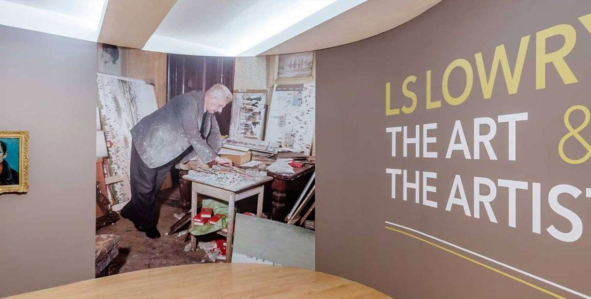

The lowry is home to the worlds largest public collection of paintings and drawings by LS Lowry. The lowry home is the most visited cultural venue in greater manchester, it is a very magnificent building along salford quays, when inside visitors will find very stunning theatres alongside gallaries showcasing artists of local, national and international renown. The lowry gallaries showcase changine exhibitions by one of britain's best loved artists. As well as paintings, sculpture and photography from around the world. There is always something new to see in the gallary, gallary entry is free. For families, kids will love the lowry, with its bright orange staircases, sloping blue floors and purple and glass walls but it also has lots of secrets corners waiting to be discovered. The lowry has got many facilities and all of which have got pushchair access, as well as gifts which appeal to younger visitors in the shop.With so much fun throughout the building visitng the lowry will make your day out in manchester very great. a website link have been provided so that you can find out more about the lowry and all about it, and there is also a youtube video to watch about the lowry as well.